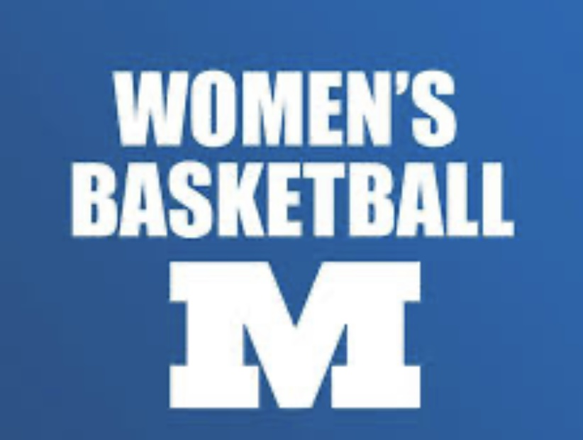
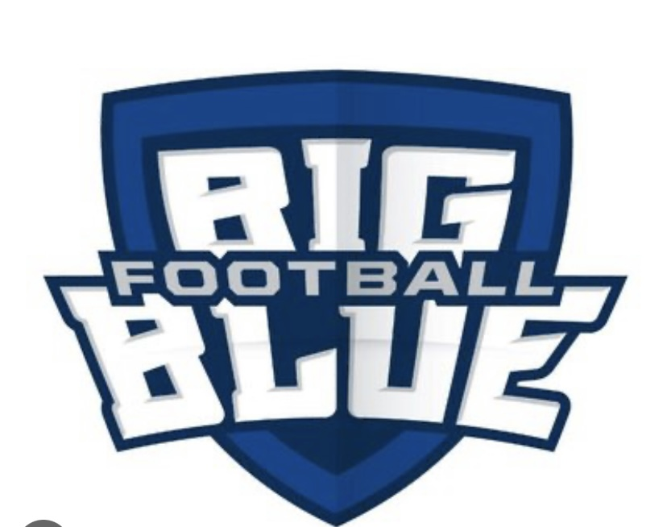

Millikin University is known for making their students acheive success for anything they want to accomplish. One of these successes being the sports that Millikin University participates in. Among these sports that is going to be talked about are Women's Basketball, Football, and Wrestling. We will be going over the history, what is going on in the current season, and the future for these Millikin sports teams.

